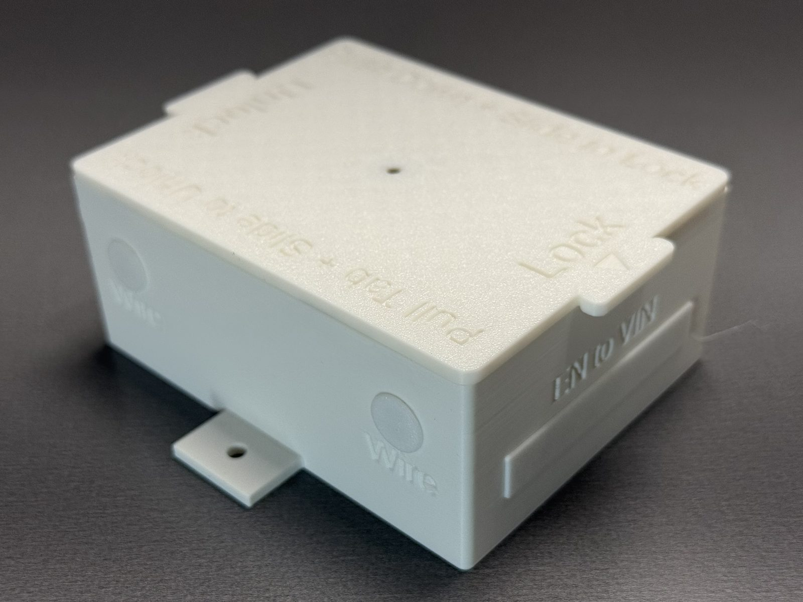
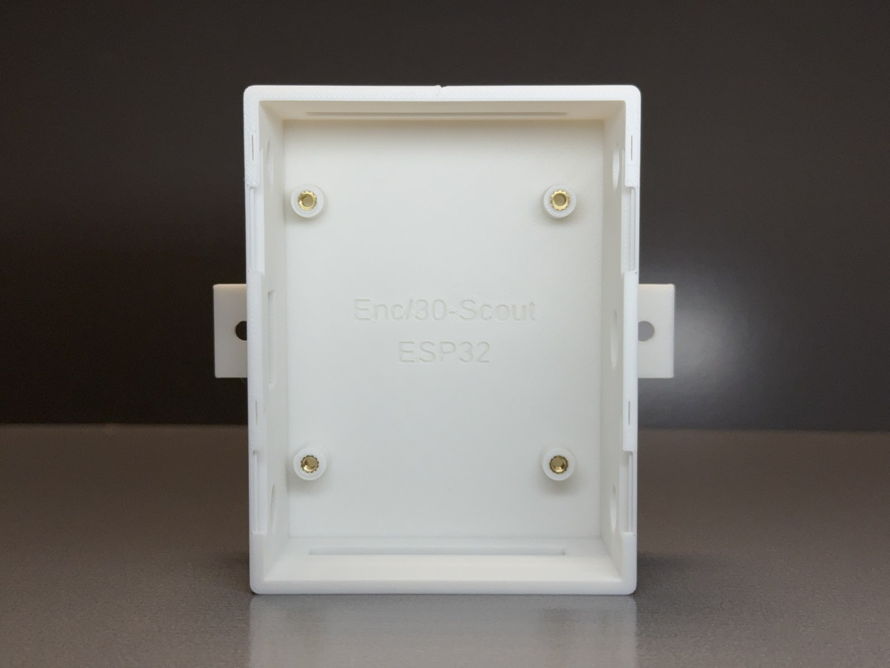
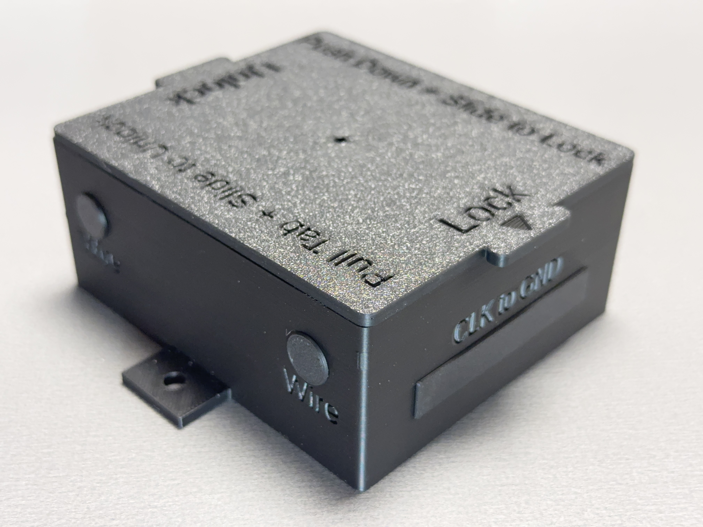
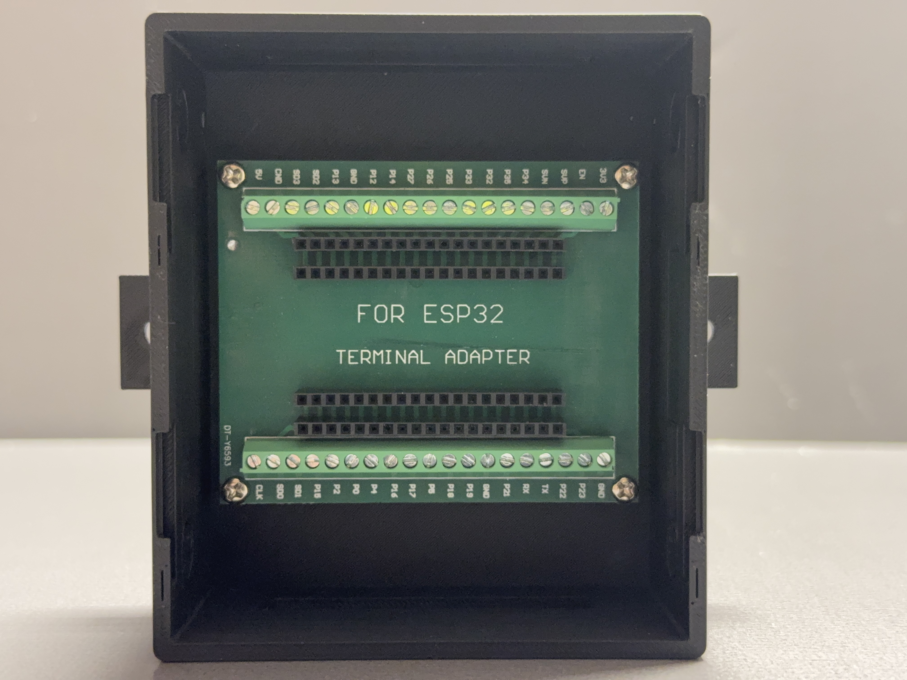

WestTech Home Automation • Tindie documentation
Scout Unloaded Enclosure Documentation
Reference information for Scout 30 and Scout 38 unloaded ESP32 automation enclosures listed on Tindie.
Overview
What it is
Scout is the compact WestTech Home Automation enclosure family for ESP32, ESPHome, Home Assistant, sensor, and small IoT projects.
What unloaded means
The unloaded version is for customers who already have their own ESP32 board and electronics. It provides the printed enclosure, lid, inserts, and hardware only.
Models covered
| Model | Board layout | Approx. overall size | Notes |
|---|---|---|---|
| Scout 30 Unloaded SCOUT-30-UNLOADED |
Compatible 30-pin ESP32 breakout-board layouts | 4.25 in × 4.49 in × 1.77 in (108 × 114 × 45 mm) | Compact Scout footprint for smaller indoor builds. |
| Scout 38 Unloaded SCOUT-38-UNLOADED |
Compatible 38-pin ESP32 breakout-board layouts | 4.65 in × 4.49 in × 1.77 in (118 × 114 × 45 mm) | Compact Scout footprint with support for the larger 38-pin board format. |
Dimensions include the installed lid, lid width overhang, and mounting tabs.
What is included
Included
- Scout enclosure body
- Matching lid
- Standard insert set
- Installed hardware
- Standard mounting hardware
Not included
- ESP32 board or breakout board
- Electronics, wiring, sensors, relays, or power supply
- Firmware, programming, or installation labor
- Source code, CAD files, or design files
Use and environment notes
Best fit
Small ESP32 projects where a compact finished enclosure is more important than extra internal room.
Common uses
ESPHome nodes, Home Assistant sensors, compact IoT projects, low-voltage automation ideas, and cleaner prototype-to-install builds.
Reference photos
Photos are representative of the family and may show either 30-pin or 38-pin layouts. Electronics shown in example fitment photos are not included.




Tindie checkout note
For product questions, use the Tindie message system or contact WestTech Home Automation support through the official website.